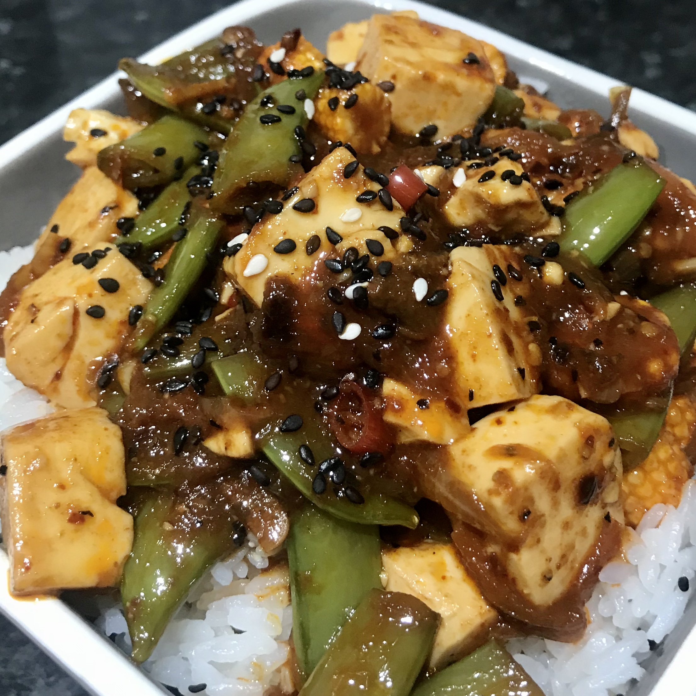

HOME ABOUT BLOG PORTFOLIO CONTACT

I adore spice, even in the blistering heat we've been enduring in the UK lately. One of my all time favourite spicy dishes is mapo tofu, which I first tried in a 7/11 in Tokyo last August.
Mapo tofu recipes generally utilise 花椒 (sichuan pepper) to create a tongue-numbing sauce; However I had to get inventive with fresh birds eye chillies and korean 고추가루 chilli flakes due to not being able to source sichuan pepper during the lockdown. I think I managed to replicate the flavour profile well, despite the recipe being quite in-authentic.
Ingredients:
— 3 tbsp oil
(I have tried making this with sesame and olive oil and achieved excellent results with both)
— 2 fresh birds eye chillies, cut into thin slices
— 2 tbsp korean gochugaru chilli flakes
— 2 cloves garlic, minced
— 2 small onions or 4 shallots, finely chopped
— 2 tbsp light soy sauce
— 2 tsp lemon juice
— A pack of soft tofu, roughly 300g, cubed
(I was advised to use soft tofu rather than silken, but could not source any soft tofu. Silken tofu works just fine so long as you are extremely gentle whilst stirring!)
— A handful of your choice of vegetables, cut into bite-sized pieces
(I chose sugar snap peas and baby corn, although broccoli and mushrooms are great options too)
Method:
1. Heat the oil in a large saucepan over medium high before adding in the birds eye chilli, chilli flakes and onion.
2. Stir whilst frying for a few minutes until fragrant and the oil has developed a bright red/orange hue. Add the minced garlic cloves and fry until light golden.
3. Add the vegetables and mix until well coated in the oil.
4. Carefully pour in the soy sauce and lemon juice along with a splash of water, mixing until thoroughly combined.
5. Cook for a few minutes until the sauce has started to thicken and the vegetables are almost done.
6. Add the tofu cubes and gently stir until coated in sauce. Cook for a few minutes until the pan has become slightly dry, before adding another splash of water and allowing to simmer for a few more minutes.
7. Once the sauce has thickened again, it's ready to serve! Place onto a bed of fluffy jasmine rice and top with sesame seeds.